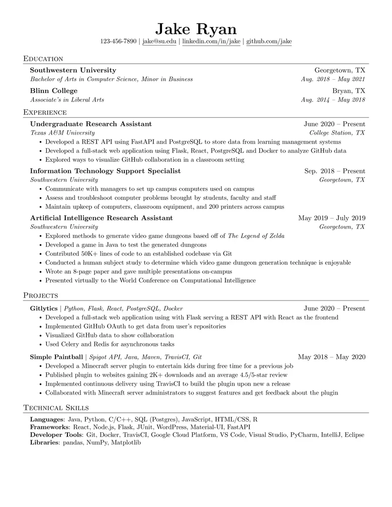

ResumeBuilder is where students & professionals build resume.

Meta
Amazon
Apple
Netflix
Google
Samsung
Accenture
Huawei
Our resume shortlisted in companies
FEATURES
Create your resume with just 2 steps
Streamline your process of making your resume using the website which simplifies the process of making your resume
Fill in the Blanks
Take a moment to fill in all the relevant details of your education, work experience, skills, achievements, and create a comprehensive and compelling resume that showcases your qualifications and makes you stand out to potential employers.
Hit 'Download!'
And yes, it's absolutely free! We take pride in providing a top-notch resume builder that doesn't hit you with a paywall. You can access all the features and benefits without spending a dime. So, create your resume in just two steps and kickstart your journey.
"By failing to prepare, you are preparing to fail."
- Benjamin Franklin
ABOUT ME
Vipin Kumar
Hey there, I'm Vipin, a dedicated web developer with a flair for crafting engaging and responsive web applications. I love creating user-centric experiences and am keen on collaborating to build something extraordinary. I'm also into pentesting and CTF challenges. Let's collaborate and build something extraordinary together!
Frequently Asked Questions
How do I get started with the resume builder?
To get started, simply visit our website and click on the "Get Started" or "Create Resume" button. You'll be guided through the two-step process to create your resume.
Is the resume builder really free to use?
Yes, our resume builder is completely free to use. There are no hidden fees or subscriptions required.
Can I customize the Jake Ryan's template to suit my needs?
Absolutely! While using the Jake Ryan's template, you can customize various sections, such as contact information, work experience, education, and skills, to tailor your resume according to your preferences.
What information should I include in my resume?
Your resume should typically include your contact information, a summary or objective, work experience, education, skills, and any relevant additional sections like certifications or achievements.
Can I use the resume builder without creating an account?
Yes, you can use our resume builder without creating an account. However, creating an account allows you to access and edit your resume later on.